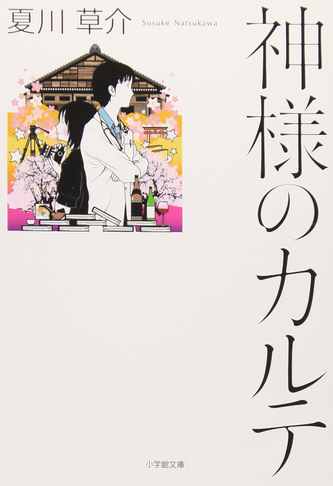
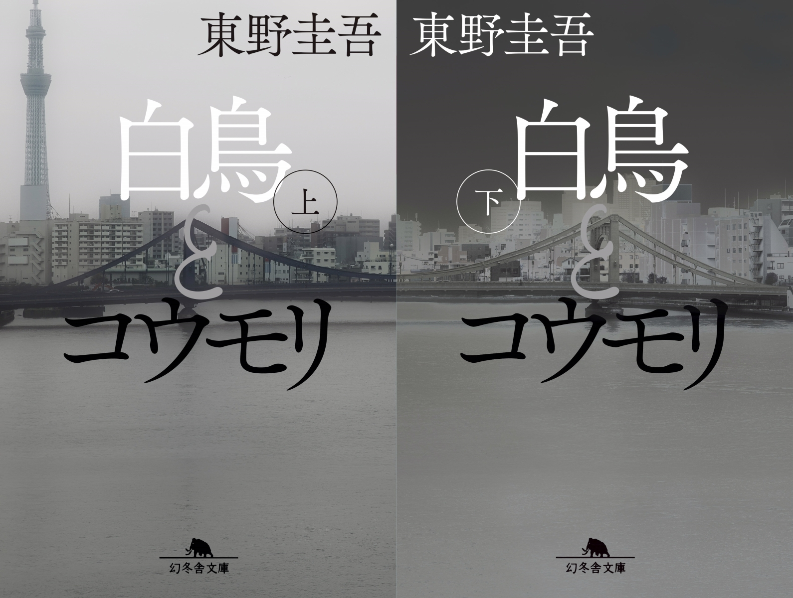

趣味：読書
私の趣味は読書です。紙媒体の小説が好きで書店に通い、目を引く本を手にとっては購入しています。 今回は私のおすすめの小説を二つ紹介します。
① 神様のカルテ（夏川草介）

信州の医師の話で、心理描写や人間らしさがにじみ出ていて、読むと心が穏やかになる作品です。 シリーズ化、映画化もされています。
② 白鳥とコウモリ（東野圭吾）

ミステリーやどんでん返しが好きな人にはたまらない作品で、上・下の二巻あるにもかかわらず あっという間に読み進めてしまいました。